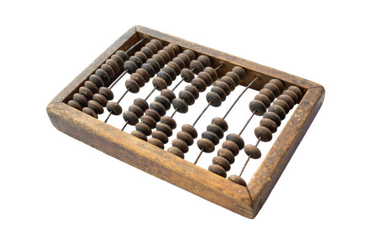
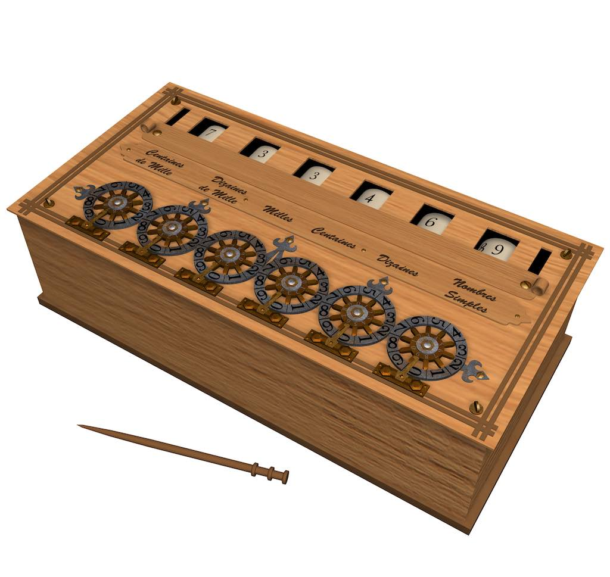
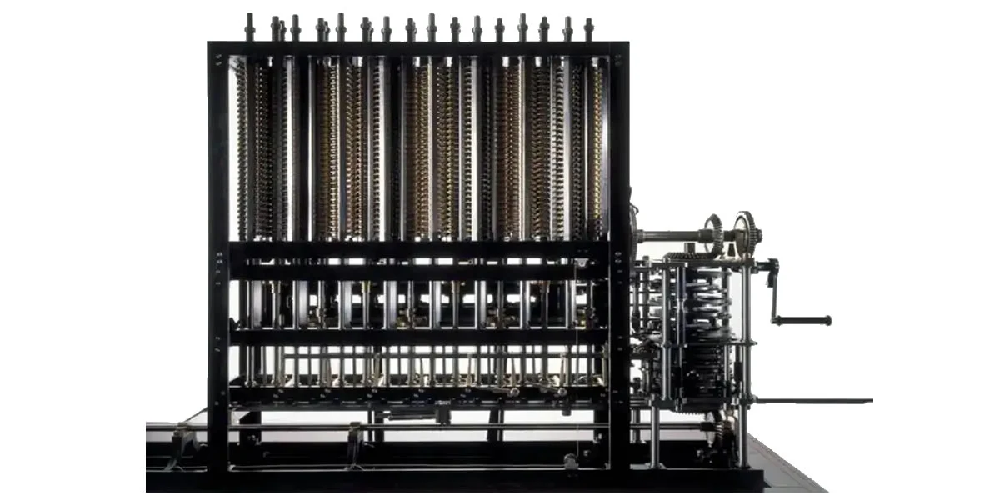
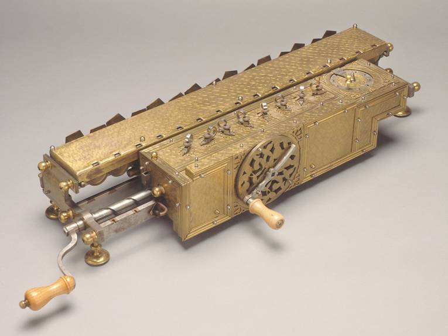
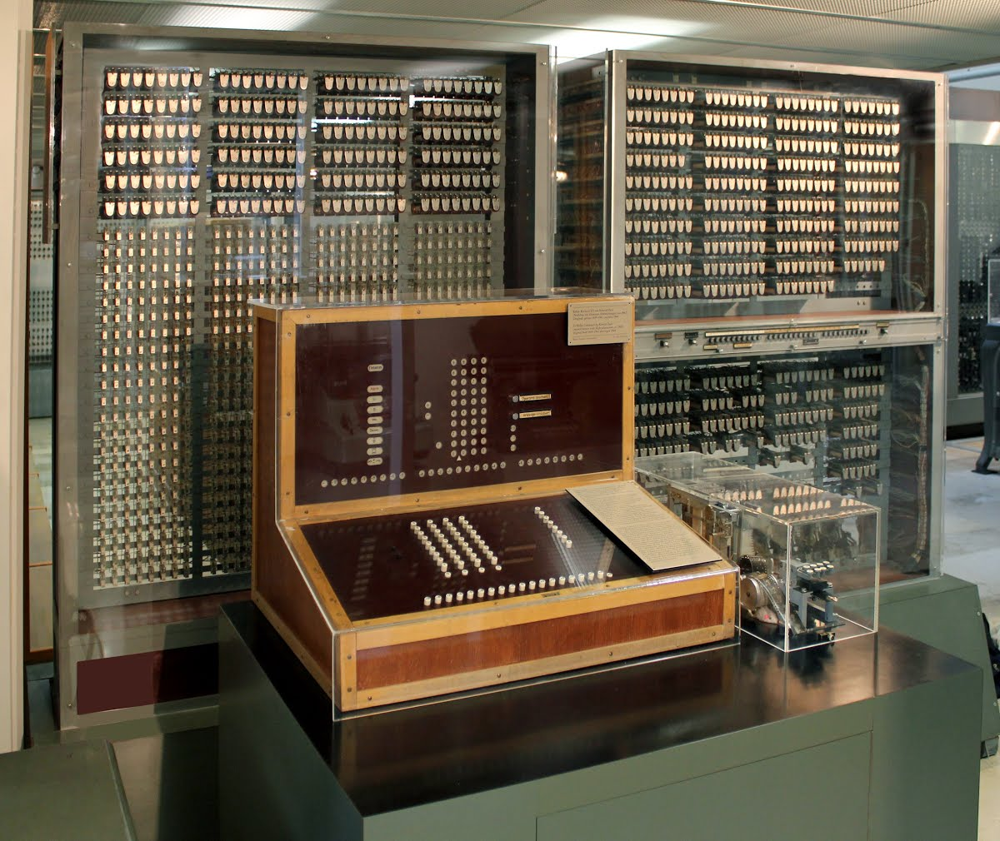

La "máquina de cálculo" es un término amplio que puede referirse a diversas herramientas y dispositivos a lo largo de la historia diseñados para realizar operaciones matemáticas. Algunas de las máquinas de cálculo más importantes y su evolución histórica:
Evolución
Abaco
El ábaco es una de las primeras herramientas de cálculo conocidas, utilizada desde la antigua Mesopotamia alrededor del 2300 a.C. Es un dispositivo mecánico que permite realizar operaciones matemáticas como sumas, restas, multiplicaciones y divisiones, moviendo cuentas a lo largo de barras o hilos. El ábaco sigue siendo utilizado en algunas culturas como herramienta educativa y para realizar cálculos rápidos.

La Pascalina
La Pascalina, inventada por el matemático y filósofo Blaise Pascal en 1642, es considerada una de las primeras calculadoras mecánicas. Este dispositivo, diseñado inicialmente para ayudar a su padre en su trabajo como recaudador de impuestos, podía realizar sumas y restas mediante ruedas dentadas que se movían de acuerdo a la cantidad de unidades.

La Máquina Analítica
Charles Babbage, un matemático británico del siglo XIX, es conocido por haber diseñado la máquina analítica, que es considerada el precursor de la computadora moderna. Esta máquina fue un dispositivo mecánico capaz de realizar cualquier cálculo matemático mediante el uso de tarjetas perforadas, con la capacidad de almacenar y procesar información, y podría ser programada para realizar tareas específicas. Aunque nunca fue completada en su época debido a limitaciones tecnológicas, la máquina analítica fue clave en el desarrollo de las computadoras modernas.

La Calculadora de Leibniz
Gottfried Wilhelm Leibniz, filósofo y matemático alemán, desarrolló una máquina calculadora en 1673 que podía realizar multiplicaciones y divisiones. Su máquina, conocida como la Pascalina de Leibniz o "Stepped Reckoner", utilizaba un sistema de engranajes para realizar operaciones automáticas, y es una de las primeras máquinas en utilizar el concepto de un mecanismo de desplazamiento.

La Calculadora Electrónica
A lo largo del siglo XX, la tecnología de los cálculos mecánicos fue reemplazada gradualmente por dispositivos electrónicos. En 1937, Konrad Zuse, un ingeniero alemán, construyó la Z3, considerada la primera computadora programable electrónica. En la década de 1960, las calculadoras electrónicas portátiles empezaron a estar disponibles, ofreciendo funciones matemáticas avanzadas como raíces cuadradas, logaritmos y trigonometría.

Impacto
Las máquinas de cálculo han tenido un impacto transformador en el mundo, acelerando avances en la ciencia, investigación y tecnología. Han facilitado la automatización de procesos, mejorando la eficiencia y reduciendo costos en diversas industrias. También han revolucionado el acceso a la información, impulsado el desarrollo de tecnologías como la inteligencia artificial y la computación en la nube, y mejorado la productividad. Además, han democratizado el acceso a herramientas antes exclusivas, cambiando el mercado laboral y transformando la cultura y la sociedad, con efectos profundos en la comunicación, educación y globalización.